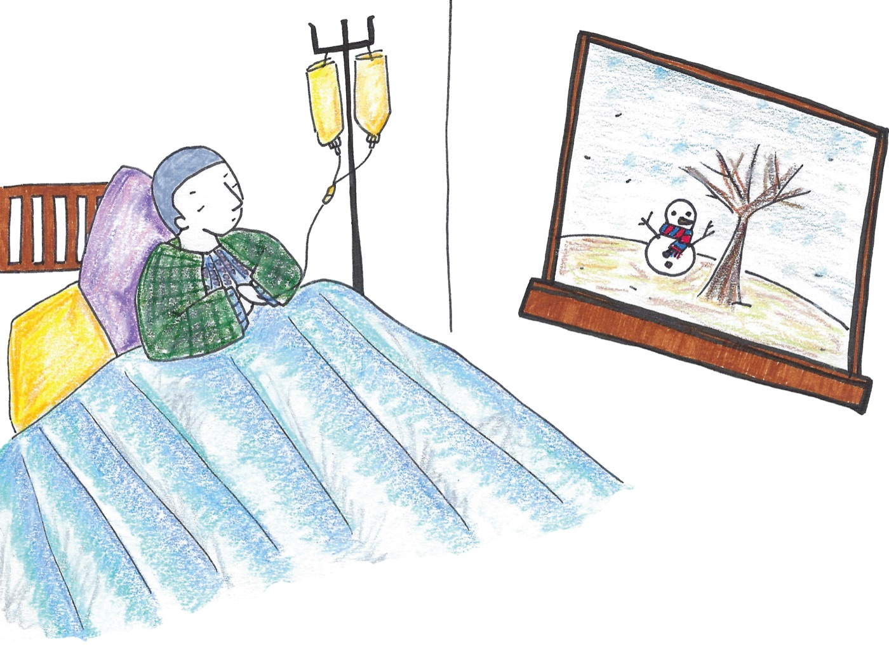

2030 암환우 살리는 여행 버킷북

말기암을 이겨낸 뒤 혼자 떠난 80일. 그때 찍은 사진으로 책을 만들어, 지금 병실에 있는 사람에게 보냈습니다. 또봄의 첫 번째 프로젝트입니다.
처음엔 위염인 줄 알았습니다
2015년, 서른다섯. 가끔 배가 아팠지만 별일 아니라고 생각했습니다. 통증이 심해져 받은 검진에서, 상급병원은 버킷림프종 혈액암 말기를 진단했습니다. PET CT 결과 암세포는 이미 거의 모든 장기에, 항암제를 직접 주사해야 하는 척수까지도 퍼져 있었습니다.
8개월 전 검진에서는 아무 이상이 없었고, 두 달 전엔 마라톤도 완주했습니다. 그런데 항암치료 사흘 만에 몸무게가 10kg 넘게 빠졌습니다.

여행을 좀 더 다녔다면. 그 사람과 시간을 더 보냈다면.
병상에서 적기 시작한 목록
하고 싶은 일을 적어 내려가는 것으로 버텼습니다. 2차 항암치료를 지나며 암세포가 서서히 사라졌고, 2015년 11월, 5개월 만에 치료를 마쳤습니다.
퇴원 후 의사의 허락을 받아 한적한 시골과 제주도에 다녀왔습니다. ‘여행’이라 생각하니 더 열심히 걷게 됐고, 죽음으로 향하던 시간을 삶으로 옮기겠다는 의지가 그때 생겼습니다.

저는 이미 죽은 사람이었습니다
“이러다 암 걸리겠다.” — 스트레스 받는 누구에게나 무심코
“그러니 암에 걸렸지.” — 이미 암을 겪은 사람에게
가볍게 던진 말이지만, 듣는 사람에게는 오래 남습니다. 같은 병실 어르신에게 “젊은 사람이 그렇게 관리를 못 했냐”는 말을 들은 친구도 있었습니다. 술도 담배도 하지 않아도 걸리는 것이 암인데 말입니다.
항암치료 때문에 살 빠진 게 다이어트보다 효과가 큰 것 같다.
한 환우가 지인에게 들은 말
빨리 낫기를 바라며 무심코 한 말이겠지만, 가볍게 웃어넘기기엔 그가 놓인 자리가 암 환자입니다.
치료로 보낸 몇 년 사이 대인관계는 자연스레 정리되고, 완치 후에도 예전 같은 강도로 일하긴 쉽지 않습니다. 투병 사실이 채용에 문제가 될까 봐 숨기는 사람도 많습니다.
그런데 이 이야기는 잘 알려지지 않았습니다
암은 나이 든 사람의 병이라 여겨져, 청년 암 환자의 수는 잘 이야기되지 않습니다. 실제 숫자는 이렇습니다.
2001년과 2010년 수치는 2018년 프로젝트 당시 인용한 보건복지부 발표 자료, 2023년은 가장 최근 발표된 국가암등록통계입니다.
20년 사이 두 배가 됐습니다. 그런데 국가 암 검진은 40대 이상에게만 권해, 20~30대는 발견도 늦고 참는 경우도 많습니다.
그래서 책을 만들었습니다
항암치료 부작용 때문에 병실에서 책을 읽기는 쉽지 않습니다. 그래서 글이 아니라 사진으로 만들었습니다. 여행지 사진과 짧은 글, 그리고 직접 적어 넣는 버킷리스트 페이지. “다 나으면 저기 가야지” 하는 마음 하나면 충분했습니다.

한 권을 사면 한 권이 병원으로.
분당서울대학교병원, 연세대학교 세브란스병원, 가톨릭대학교 서울성모병원과 협약을 맺고,
구매하신 수량만큼 20~30대 암 환자에게 무상으로 전달했습니다.
펀딩에 참여하신 분들의 응원 메시지도 함께 모아 책 안에 넣었습니다. 내가 산 책이 누군가의 병실로 가고, 그 안에 내 문장이 있는 방식이었습니다.
결과
- 205%목표 달성
- 200건펀딩 참여
- 6,149,000원모금액
이렇게 모인 책을 세 곳의 병원에 각 100권씩 전했습니다. 그리고 포토북에 적어 보낸 버킷리스트 중에서 함께 갈 사람을 뽑아, 태국 치앙마이 · 동해 · 스키장 · 남해로 실제로 함께 떠나기 시작했습니다. 여행 프로젝트는 그렇게 이어졌습니다.

이 책이 누군가에게 마지막 잎새 같은 역할을 할 수 있기를.
이정훈 · 한국청년암협회또봄 이사장
이 글은 2018년 다음 스토리펀딩에 연재한 ‘2030 암환우 살리는 여행버킷북’ 0~2화를 다시 정리한 것입니다. 스토리펀딩 서비스 종료로 원문은 또봄 네이버 카페에 보관돼 있습니다.